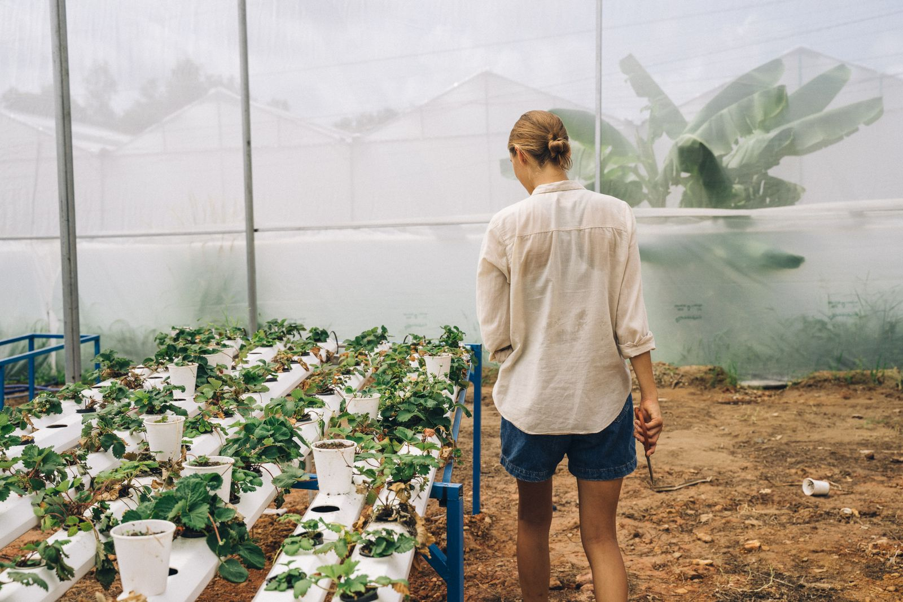
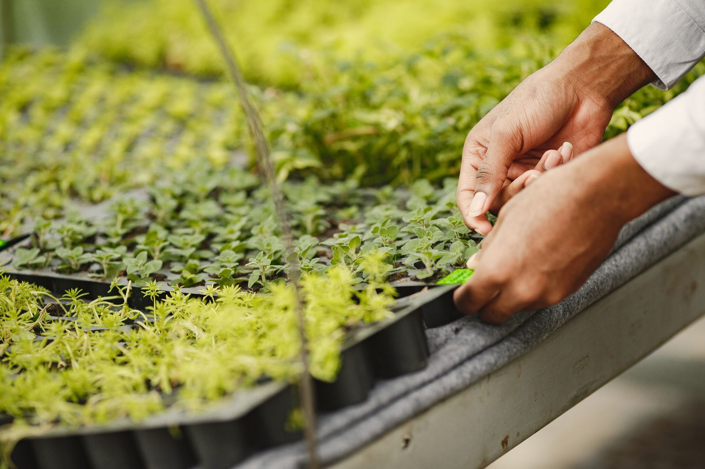

About the grower
Trained on plants. Employed by arithmetic.
I came to closed environments the ordinary way: a doctorate in plant physiology, then six years in commercial glasshouse research and development in the Westland, where the tomatoes are excellent and the energy bills are a second crop nobody ordered. The work taught me the two lessons this practice runs on. First, plants are honest — given a measured environment, they do what the physics says, and when they don't, the measurement was wrong. Second, the growing is rarely the hard part; the hard part is knowing, in numbers, what the growing costs.
The space work arrived through the side door. Habitat programmes — the analogue stations where crews rehearse living in a sealed box — kept discovering that their crop modules had been designed by people who loved space and estimated plants. I now split my time between Earth clients (glasshouses, vertical farms, propagators) and closed-environment research: growth-chamber crop programmes for analogue missions, and chamber trials run to the standards a flight programme would demand, on the ground, where a failed pump is an anecdote instead of an emergency.
The practice is deliberately small: one scientist, one research glasshouse, a bench of chambers, and a log. When a project needs a bigger team, I say so and name the people I would bring in, rather than quietly subcontracting your crop to strangers.
Credentials, stated the way I state everything: doctorate in plant physiology; six years in commercial glasshouse R&D; crop-programme work for two analogue habitat programmes and a dozen Earth growers. References and the full trial archive are available to serious enquiries — the archive includes the failures, which is rather the point.

How a crop runs here
Every programme, whether it is four square metres in a habitat or four hundred in a farm, moves through the same five stages. The stages are the contract: each one produces a page of the log the client can read.
Sowing
Seed lot, sowing density and germination conditions recorded before a single tray is wet. Germination is counted, not assumed — a programme that starts at 92% emergence plans differently from one that starts at 99%, and pretending otherwise costs a week later.
Germination & propagation
Young plants live at seedling numbers: DLI 6–12, gentle nutrient (EC 0.8–1.2), high humidity. The most common fault in the trade is adult light on infant plants; the log's first fortnight is deliberately boring.
Grow-out
The recipe from the programme design runs, and the log records what the room actually did — canopy DLI measured weekly, nutrient EC and pH logged at every tank change, temperature day and night. Deviations are written down the day they happen, with the decision they caused.
Harvest
Weighed, graded and counted against the planning yield. Fresh weight is the headline; dry matter and quality grades are the truth underneath it, and both are reported. Produce from trials is composted or donated, never sold — trial food is data, not stock.
Sanitation & reset
Between cycles the system is stripped, cleaned and disinfected, and two days of the cycle length in Table 1 are exactly this. Skipping sanitation to gain a cycle is how a room acquires a permanent disease problem and loses six.
Nutrient numbers, hedged properly
Hydroponic nutrient is managed by electrical conductivity (EC, the strength of the feed) and pH (its acidity). These are the typical working ranges this practice starts from — starting points, adjusted per cultivar, water source and season, and always subordinate to what the crop in front of us is doing.
| Crop class | Feed EC | pH | Note |
|---|---|---|---|
| Leafy greens | 1.2–1.8 mS/cm | 5.5–6.2 | Push EC up in winter for substance; watery heads are usually a feed problem wearing a light costume. |
| Herbs — basil | 1.6–2.2 mS/cm | 5.5–6.5 | Basil sulks in cold root zones before it sulks about feed; check temperature first. |
| Fruiting — tomato | 2.0–3.0 mS/cm | 5.5–6.5 | EC rises as fruit loads; flavour follows EC more than it follows variety brochures. |
| Seedlings | 0.8–1.2 mS/cm | 5.5–6.0 | Half-strength everything. Young roots burn at adult feed rates. |

What this practice will not claim
Nothing here has flown. My chambers are on Earth, in the Netherlands, at one gravity and sea-level pressure. The crop science transfers — a lettuce integrates photons the same way in any box whose numbers are held — but no plant of mine has been to orbit, and any space claim on this site is labelled analogue, chamber or trial. If a consultant in this field cannot tell you exactly which of those three a result was, discount the result.
Inputs, plainly. Hydroponic feed is mineral salts — manufactured chemicals, measured precisely — and that is a feature: the plant receives known nutrition and the log knows what it cost. Pest management here is integrated: screens, hygiene, biological control first; a spray is a logged decision with a reason, never a marketing secret and never a surprise. Food safety follows the same rule as everything else: produce is washed, kept cold, and traceable to a bench and a date.
Yields are planning figures. Table 1's numbers are what a well-run room should expect, drawn from published guidance and my own logs. Your first cycles will be worse. A programme that promises you the planning figure in cycle one is selling, not growing.
Engagement terms
- Programme design is booked with a 50% deposit; the balance falls due when the trial plan is delivered, before sowing.
- Trial results belong to the client and are reported in full either way — including when the result is that the client's product, variety or claim did not hold. Suppression of a result ends the engagement, with the report still delivered.
- Audits are fixed-fee and payable on delivery of the report; the sensors stay in your room for the full logging week.
- Consultancy days are booked in whole days; travel beyond 100 km is charged at cost and agreed in advance.
- Availability: two programme slots and one trial slot per quarter, booked in the order enquiries arrive. The register on the grow log shows what is currently running.